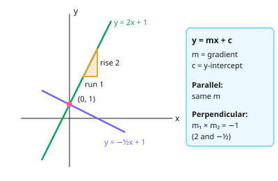

GCSE Maths · Topic 8
Graphs of functions
Graphs of functions is about drawing, recognising and using graphs to understand equations and real situations.
We will find equations of straight lines, and sketch quadratic, cubic, reciprocal, exponential and trigonometric graphs.
Then we use the equation of a circle and its tangents, transform graphs, find gradients and areas, interpret real-life graphs, and solve equations graphically.
- 8 subtopics
- 292 questions
- Free: 8.1 notes and 7 questions
In this topic
- 8.1Equations of straight lines, parallel and perpendicular linesFree below · 24 questions
- 8.2Quadratic, cubic and reciprocal graphsOpen in Full Marks · 21 questions
- 8.3Exponential and trigonometric graphsOpen in Full Marks · 57 questions
- 8.4Equation of a circle and tangentsOpen in Full Marks · 56 questions
- 8.5Transformations of graphsOpen in Full Marks · 7 questions
- 8.6Gradients of curves and areas under graphsOpen in Full Marks · 29 questions
- 8.7Real-life graphs: distance-time and velocity-timeOpen in Full Marks · 64 questions
- 8.8Solving equations graphicallyOpen in Full Marks · 34 questions
8.1 · Free notes
Equations of straight lines, parallel and perpendicular lines

Key points
- Every straight line can be written y = mx + c, where m is the gradient and c is the y-intercept (where the line crosses the y-axis).
- Gradient = change in y ÷ change in x = (y₂ − y₁) ÷ (x₂ − x₁). A line sloping up to the right has a positive gradient. A line sloping down has a negative gradient.
- Rearrange to y = mx + c before reading off m and c. For example 3x + 4y = 12 becomes y = −¾x + 3, so m = −¾ and c = 3.
- Parallel lines have the same gradient (and different y-intercepts). y = 3x + 1 and y = 3x − 5 are parallel.
- Perpendicular lines have gradients that multiply to give −1: m₁ × m₂ = −1. The perpendicular gradient is the negative reciprocal, so 2 becomes −½ and −¾ becomes 4/3.
- To find an equation from a gradient and a point, put the gradient into y = mx + c. Then substitute the coordinates of the point to find c. Alternatively use y − y₁ = m(x − x₁).
- To find an equation from two points, find the gradient first. Then substitute one point to find c, and check with the other point.
- Horizontal lines are y = k and have gradient 0. Vertical lines are x = k and have an undefined gradient. Both are special cases examiners like to test.
- To test whether a point lies on a line, substitute its coordinates into the equation. To find where a line crosses the axes, put x = 0 for the y-intercept and y = 0 for the x-intercept.
- For a perpendicular bisector, find the midpoint ((x₁ + x₂)/2, (y₁ + y₂)/2) and the negative reciprocal gradient. The tangent to a circle is perpendicular to the radius at that point.
- In real-life graphs the gradient is the rate of change (e.g. £ per km) and the y-intercept is the fixed or starting value. State the units when you interpret them.
In more detail
- Worked rearranging: 3x + 4y = 12 → 4y = −3x + 12 → y = −¾x + 3, so the gradient is −¾ and the y-intercept is 3.
- Worked two points: (2, 1) and (6, 9) → m = 8 ÷ 4 = 2; 1 = 2 × 2 + c → c = −3 → y = 2x − 3.
- Worked perpendicular bisector: A(1, 2), B(5, 6): midpoint (3, 4), gradient of AB = 1, so the perpendicular gradient is −1 → y = −x + 7.
- Worked point test: is (4, 5) on y = 2x − 3? 2 × 4 − 3 = 5, so yes.
- Worked real-life meaning: a taxi fare y = 1.5x + 3 has a £3 fixed charge and costs £1.50 per mile.
Practice
Equations of straight lines, parallel and perpendicular lines: 7 questions
Pick an answer to check it, or open the answer for the explanation.
1. Find the gradient of the line through (1, 3) and (5, 11).
- 8
- 4
- ½
- 2
Show answer
D: 2. Gradient = change in y ÷ change in x = (11 − 3) ÷ (5 − 1) = 8 ÷ 4 = 2.
2. A line is parallel to y = 3x − 4 and passes through (0, 7). What is its equation?
- y = 3x − 4
- y = −⅓x + 7
- y = 7x + 3
- y = 3x + 7
Show answer
D: y = 3x + 7. Parallel lines share the gradient 3. The line crosses the y-axis at (0, 7), so c = 7 and the equation is y = 3x + 7.
3. Which statement is correct about the lines y = 2x + 3 and 4x − 2y = 5?
- They are the same line
- They are parallel
- They cross at (0, 3)
- They are perpendicular
Show answer
B: They are parallel. Rearranging 4x − 2y = 5 gives y = 2x − 2.5. Its gradient is 2, the same as y = 2x + 3, but the intercepts differ, so the lines are parallel.
4. A taxi fare is C = 3 + 2d, where C is the cost in pounds and d is the distance in km. What does the 2 represent?
- The cost of a 3 km journey
- The cost per kilometre is £2
- The fixed charge is £3
- The cost of a 2 km journey
Show answer
B: The cost per kilometre is £2. The gradient is the rate of change. The cost rises by £2 for each extra kilometre. The fixed charge is the intercept, £3.
5. Find the equation of the line perpendicular to y = −3x + 1 that passes through (3, 4).
- y = ⅓x + 3
- y = ⅓x + 4
- y = 3x − 5
- y = −⅓x + 5
Show answer
A: y = ⅓x + 3. The perpendicular gradient is ⅓. Substituting (3, 4) into y = ⅓x + c gives 4 = 1 + c, so c = 3 and the equation is y = ⅓x + 3.
6. Water drains from a tank: V = 200 − 5t, with V in litres and t in minutes. What does −5 represent?
- Water drains at 5 litres per minute
- The tank starts with 5 litres
- The tank empties after 5 minutes
- The tank holds 200 litres in total
Show answer
A: Water drains at 5 litres per minute. The gradient is the rate of change. It is negative because the volume falls, so the tank loses 5 litres every minute. The starting volume is 200 litres.
7. Which is the equation of the line through (4, −3) that is parallel to the x-axis?
- y = 4
- x = −3
- x = 4
- y = −3
Show answer
D: y = −3. A line parallel to the x-axis is horizontal, with equation y = k. Every point on it has y-coordinate −3, so y = −3. The line x = 4 is vertical.
Keep going in Full Marks
Full Marks has 24 questions on Equations of straight lines, parallel and perpendicular lines (17 more than here), set out in practice levels. You also get notes and 3D models for all 8 subtopics of Graphs of functions, plus games, timed exams and past papers.
On your exam board
- AQATopic 2.2: Algebra: graphs, Topic 3: Ratio, proportion and rates of change
- OCR ATopic 2.2: Algebra: graphs, Topic 3: Ratio, proportion and rates of change
- EdexcelTopic 2.2: Algebra: graphs, Topic 3: Ratio, proportion and rates of change
- CambridgeTopic 2: Algebra and graphs, Topic 3: Coordinate geometry, Topic 6: Trigonometry